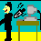
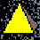
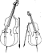

The Zine
Article Index
Click to jump directly to one of the following sections, or scroll down to just browse.
When articles appear in more than one category, only the main one is bold and not slanted.
 About The Diplomatic Pouch (The Editor)
About The Zine (The Main Poop)
Spring 1995 Movement Issue
Spring 1995 Retreat Issue
Fall 1995 Movement Issue
Fall 1995 Retreat Issue
Winter 1995 Adjustment Issue
Spring 1996 Movement Issue
Spring 1996 Retreat Issue
Fall 1996 Movement Issue
Winter 1996 Adjustment Issue
Spring 1997 Movement Issue
Spring 1997 Retreat Issue
Fall 1997 Movement Issue
Fall 1997 Retreat Issue
Winter 1997 Adjustment Issue
Spring 1998 Movement Issue
Spring 1998 Retreat Issue
Fall 1998 Movement Issue
Winter 1998 Adjustment Issue
Spring 1999 Movement Issue
Spring 1999 Retreat Issue
Fall 1999 Movement Issue
Fall 1999 Retreat Issue
Fall 2000 Retreat Issue
Spring 2002 Movement Issue
Spring 2002 Retreat Issue
Fall 2002 Movement Issue
Winter 2003 Adjustment Issue
Winter 2014 Adjustment Issue
Spring 2015 Movement Issue
About The
(The Editor)
Spring 2015 Retreat Issue
Spring 2015 Retreat Issue (The Editor)
Spring 2015 Retreat Issue (The Editor)
Spring 2015 Retreat Issue (The Editor)
Spring 2015 Retreat Issue (The Editor)
Fall 2015 Movement Issue
Fall 2015 Retreat Issue
Winter 2015 Christmas Special
Winter 2015 Adjustment Issue
Spring 2016 Movement Issue
Spring 2016 Retreat Issue
Fall 2016 Movement Issue
Winter 2016 Adjustment Issue
Spring 2017 Movement Issue
Fall 2017 Movement Issue
Winter 2017 Christmas and New Year Special
About The Diplomatic Pouch (The Editor)
About The Zine (The Main Poop)
Spring 1995 Movement Issue
Spring 1995 Retreat Issue
Fall 1995 Movement Issue
Fall 1995 Retreat Issue
Winter 1995 Adjustment Issue
Spring 1996 Movement Issue
Spring 1996 Retreat Issue
Fall 1996 Movement Issue
Winter 1996 Adjustment Issue
Spring 1997 Movement Issue
Spring 1997 Retreat Issue
Fall 1997 Movement Issue
Fall 1997 Retreat Issue
Winter 1997 Adjustment Issue
Spring 1998 Movement Issue
Spring 1998 Retreat Issue
Fall 1998 Movement Issue
Winter 1998 Adjustment Issue
Spring 1999 Movement Issue
Spring 1999 Retreat Issue
Fall 1999 Movement Issue
Fall 1999 Retreat Issue
Fall 2000 Retreat Issue
Spring 2002 Movement Issue
Spring 2002 Retreat Issue
Fall 2002 Movement Issue
Winter 2003 Adjustment Issue
Winter 2014 Adjustment Issue
Spring 2015 Movement Issue
About The
(The Editor)
Spring 2015 Retreat Issue
Spring 2015 Retreat Issue (The Editor)
Spring 2015 Retreat Issue (The Editor)
Spring 2015 Retreat Issue (The Editor)
Spring 2015 Retreat Issue (The Editor)
Fall 2015 Movement Issue
Fall 2015 Retreat Issue
Winter 2015 Christmas Special
Winter 2015 Adjustment Issue
Spring 2016 Movement Issue
Spring 2016 Retreat Issue
Fall 2016 Movement Issue
Winter 2016 Adjustment Issue
Spring 2017 Movement Issue
Fall 2017 Movement Issue
Winter 2017 Christmas and New Year Special
 Pouch Deposits (The Editor and the Readership)
Spring 1995 Movement Issue
Spring 1995 Retreat Issue
Fall 1995 Movement Issue
Fall 1995 Retreat Issue
Winter 1995 Adjustment Issue
Spring 1996 Movement Issue
Spring 1996 Retreat Issue
Fall 1996 Movement Issue
Winter 1996 Adjustment Issue
Spring 1997 Movement Issue
Spring 1997 Retreat Issue
Fall 1997 Movement Issue
Fall 1997 Retreat Issue
Winter 1997 Adjustment Issue
Spring 1998 Movement Issue
Spring 1998 Retreat Issue
Fall 1998 Movement Issue
Winter 1998 Adjustment Issue
Spring 1999 Movement Issue
Spring 1999 Retreat Issue
Fall 1999 Movement Issue
Fall 1999 Retreat Issue
Winter 1999 Adjustment Issue
Spring 2000 Movement Issue
Fall 2000 Movement Issue
Winter 2000 Adjustment Issue
Spring 2001 Movement Issue
Fall 2001 Movement Issue
Spring 2002 Movement Issue
Spring 2002 Retreat Issue
Fall 2002 Movement Issue
Fall 2002 Retreat Issue
Winter 2002 Adjustment Issue
Spring 2003 Movement Issue
Winter 2003 Adjustment Issue
Winter 2014 Adjustment Issue
Spring 2015 Retreat Issue (The Editor and the Readership)
Pouch Deposits (The Editor and the Readership)
Spring 1995 Movement Issue
Spring 1995 Retreat Issue
Fall 1995 Movement Issue
Fall 1995 Retreat Issue
Winter 1995 Adjustment Issue
Spring 1996 Movement Issue
Spring 1996 Retreat Issue
Fall 1996 Movement Issue
Winter 1996 Adjustment Issue
Spring 1997 Movement Issue
Spring 1997 Retreat Issue
Fall 1997 Movement Issue
Fall 1997 Retreat Issue
Winter 1997 Adjustment Issue
Spring 1998 Movement Issue
Spring 1998 Retreat Issue
Fall 1998 Movement Issue
Winter 1998 Adjustment Issue
Spring 1999 Movement Issue
Spring 1999 Retreat Issue
Fall 1999 Movement Issue
Fall 1999 Retreat Issue
Winter 1999 Adjustment Issue
Spring 2000 Movement Issue
Fall 2000 Movement Issue
Winter 2000 Adjustment Issue
Spring 2001 Movement Issue
Fall 2001 Movement Issue
Spring 2002 Movement Issue
Spring 2002 Retreat Issue
Fall 2002 Movement Issue
Fall 2002 Retreat Issue
Winter 2002 Adjustment Issue
Spring 2003 Movement Issue
Winter 2003 Adjustment Issue
Winter 2014 Adjustment Issue
Spring 2015 Retreat Issue (The Editor and the Readership)
 The Pouch Project
Beginning the 21st Year (Chris Babcock)
Not Walking Kai (Rick Leeds)
The Postal Section of the Pouch, 20 Years On (Jim Burgess)
Harold Reynolds, Diplomacy Laureate (Larry Peery)
The Five Best Articles From Past Issues of The Pouch (Peter McNamara)
The State of the Art and Science in Diplomacy (Chris Babcock)
Befriending Diplomacy (Chris Hughes)
A Call to Arms (Kevin Burt)
The Pouch Project
Beginning the 21st Year (Chris Babcock)
Not Walking Kai (Rick Leeds)
The Postal Section of the Pouch, 20 Years On (Jim Burgess)
Harold Reynolds, Diplomacy Laureate (Larry Peery)
The Five Best Articles From Past Issues of The Pouch (Peter McNamara)
The State of the Art and Science in Diplomacy (Chris Babcock)
Befriending Diplomacy (Chris Hughes)
A Call to Arms (Kevin Burt)
Game Commentary
An Annotated No-Press Game (Doug Massey)
Caissa Annotates a No-Press Game
Caissa Finishes Annotating a No-Press Game
The First Swedish Diplomacy Invitational On Video (Nils Bryntesson and Björn Thalén)
The First Swedish Diplomacy Invitational — A Game Review (Björn Thalén)
World Diplomacy Championship 2016 Recap (Chris Martin)
World Diplomacy Championship 2017 Recap (Mario Huys)
The Diplomacy Academy (Dan Shoham)
The Games CutThroat and CareBear
The Game Fresh
The Game Chopin
The Game HGWells
The Game Vanier
The Game Fools
The Game Barney
The Game Gnat
The Game Troi
History Lessons
The Zimmermann Telegram (Kevin Burt)
Crypto: The Alchemy of Diplomacy (Kevin Burt)
January First (Kevin Burt)
Peeriblah's Potpourri (Larry Peery)
Mona Lisa's Eyes
XENOGOGIC
XENOGOGIC II
Diplomacy: A Matter of Real Estate
Location, Location, Location... Sold!
The Diplomacy Emotion Survey
Seven Embassies for Seven Dippers
Dippers Are What They Eat
The Doctor of Diplomacy Program
Is it Time for a Diplomatic Pouch Chat Room?
Yes, It's Been A Long Hot Summer
A History of World DipCon
Alfred and Brian — The Harvard Years
Modern Real World Real Women Diplomats
A Peerispective on Dr Henry Alfred Kissinger (with Martin Burgdorf)
Diplomacy at the Watergate
Growing the Hobby VII — December 7 2015, A Day to Celebrate
War, diplomacy and Diplomacy (with Reynaldo V. Sylvestre)
14 Life Lessons I've learned from Diplomacy
How Many Diplomacy Sets Do You Own?
Where Dippers (& Dippers) Live, Work, and Play — Then and Now
The Hawk and the Dove — Songs of World War I
Austria and Germany, a Panoramic Peerispective
Bataclan, Waterloo and the St. Bartholomew's Day Massacre
The Congress of Vienna -
Part I
The Badass and the Egghead: LeMay and Schriever
The Congress of Vienna — The Little Fries Get Fried
Peeriblah Goes Down to Defeat
The Diplomate who became a Billionaire
Saving Diplomacy World
Man vs. Machine: Redux
The Handshake Felt Round Diplomacy
Zero Sum Games
The Big Ten dip&Dip Stories of 2017
Humor
1901: A Diplomatic Odyssey (Danny Loeb)
North Sea to Picardy (Manus Hand)
The Face to Face Variant (Danny Loeb)
Diplomacy 2000 (Nic Chilton)
No Holds Barred (Amos Anon)
Seven Little Dudes (Rob Addison)
The Wrath of the Diplomacy Gods (Cameron Moser)
The MANSA Charter (Bjorn von Knorring)
Newspaper Editorial Cartoons from World War I (Larry Peery)
Yes, Virginia! (Kevin Burt)
The Frog and the Scorpion (Kevin Burt)
2016 Astrological Projections for Diplomacy Players (Sibyl Astromancer)
Switzerland for Novices (Norm de Guerre)
Diplomacy Board Puns (Harold Reynolds)
Trump World (Mario Huys)
 Songs and Poems
Juggernauty (Clinton Wolf)
Father Bill (Clinton Wolf)
Songs for the Season (Various)
The Pouch Salutes The Chairman of the Board (Manus Hand)
ABBA Plays Diplomacy (Jack Rudd)
Diplomacy Limericks (Harold Reynolds)
Diplomacy By The Letters (Harold Reynolds)
Diplomacy by the Letters, Part II — The Great Powers (Harold Reynolds)
The Night Before DipCon (Harold Reynolds)
Let's go! (Kevin Burt)
Blue Christmas (Kevin Burt)
Stab (Mario Huys)
Silent Friend (Manus Hand)
I'll be in Rome by Christmas (Kevin Burt)
Ding Dong Mario's on High (Larry Peery)
A Holiday Poem (Harold Reynolds)
A Diplomacy Haiku (Harold Reynolds)
Diplomericks (Harold Reynolds)
All Zombies Must Die A Second Time! (Charles Roburn)
A Game with a Twist (Harold Reynolds)
In Memoriam (Harold Reynolds)
Stabbing Bells (Harold Reynolds)
Hark! the Herald Dipper Cries (Harold Reynolds)
Deck the Board (Harold Reynolds)
Rudolph the Red-Nosed Dipper (Harold Reynolds)
Songs and Poems
Juggernauty (Clinton Wolf)
Father Bill (Clinton Wolf)
Songs for the Season (Various)
The Pouch Salutes The Chairman of the Board (Manus Hand)
ABBA Plays Diplomacy (Jack Rudd)
Diplomacy Limericks (Harold Reynolds)
Diplomacy By The Letters (Harold Reynolds)
Diplomacy by the Letters, Part II — The Great Powers (Harold Reynolds)
The Night Before DipCon (Harold Reynolds)
Let's go! (Kevin Burt)
Blue Christmas (Kevin Burt)
Stab (Mario Huys)
Silent Friend (Manus Hand)
I'll be in Rome by Christmas (Kevin Burt)
Ding Dong Mario's on High (Larry Peery)
A Holiday Poem (Harold Reynolds)
A Diplomacy Haiku (Harold Reynolds)
Diplomericks (Harold Reynolds)
All Zombies Must Die A Second Time! (Charles Roburn)
A Game with a Twist (Harold Reynolds)
In Memoriam (Harold Reynolds)
Stabbing Bells (Harold Reynolds)
Hark! the Herald Dipper Cries (Harold Reynolds)
Deck the Board (Harold Reynolds)
Rudolph the Red-Nosed Dipper (Harold Reynolds)
Innovations
Variable Length Tournament Diplomacy (David Norman)
A Rating System for Diplomacy (Anthony Nichols)
Scoring Draws (David Norman)
A Sneak Peek (At Hasbro Interactive's Computer Diplomacy) (Manus Hand)
The DPjudge (Manus Hand)
Tournament Tie Breakers (Robert Steinke)
What is njudge? (Millis Miller)
RoboDip and Robodots (Larry Peery)
Linguistic Harbingers of Betrayal (Vlad Niculae)
The Diplomacy Programming Project (Danny Loeb)
Challenges in Multiplayer Gaming by Computers
Openings by Computer
The Observation Module
Computer Interpretation of Diplomacy Openings
What You Don't Know Can Help You
The Combinatorics of Retreats
The Combinatorics of Adjustments
Instruction
Running Newbie E-Mail Games (Jamie Dreier)
The Diplomacy Survival Guide (Vincent Mous)
For English Native Speakers Only? (Bjørn Tore Sund)
On The Greatness of The Game (Manus Hand)
"Yours Truly," The Diplomatic Signature (David Cain)
Tips From the Masters (Regittko, Dreier, and Schwarz)
Diplomacy and International Relations Theory (David Rosen)
Diplomacy and Game Theory, part 2: Rational Choice (David Rosen)
On Diplomacy (parts I through IV) (Joseph Wheeler)
On Diplomacy (parts V and VI) (Joseph Wheeler)
When the Iron Curtain Falls: Maintaining the Mass Alliance (John Pearson)
The Ethics of Playing a Mercy Position (Mike Lease)
Wielding Too Much Power: Early Leader Syndrome (Derek McLaughlin)
The Unkindest Cut of All: The Introduction (Tim Richardson)
The Unkindest Cut of All: Getting a Handle on Your Knife (Tim Richardson)
Concealing Your Identity in Gunboat Games (Wes Makin)
Playing the Key (Tony Swinnerton)
Diversification (Bobby Somebody)
Using Integrative Complexity to Predict Stabs (Brahm Dorst)
True Blue (Vaughn Ohlman)
Concerning Stabbing (Thaddeus Black)
Like a Rubber Ball - Bouncing in Diplomacy ("Murky" (Mark B))
Diplomatic Tactics (Tom Woodhouse)
Are You Man Enough? (Tom Potocki)
How To Win Tournament Diplomacy (Revisited) (Chris Martin)
The Unrelenting Eye, Part 1 (David Hertzman)
The Unrelenting Eye, Part 2 (David Hertzman)
The Grand Alliance (Roger Yonkoski)
The Way of the Warrior (David Cohen)
Avoiding Stabs 101 (Simon Szykman)
Growing Up (Brandon Clarke)
Martin on Diplomacy: Play to Win (Chris Martin)
Winning With Italy (Steve Ray)
The Six Traits of the Advanced Diplomacy Player (Joshua Randall)
So You Think You're a Diplomat (Joe Brennan)
The Five Best Articles From Past Issues of The Pouch (Peter McNamara)
A Fine Line (Larry Peery)
Body Language in dip&DIP (Larry Peery)
Alas, Damn Warwick (Rick Leeds)
Blast From The Past
How Many Openings Are There? (Loeb, Selhammar, Green, and Hand)
Dropouts and Orphaning (Mark Nelson)
A Study in Non-Orphaned Games (Mark Nelson)
The Endgame (Nelson, Shoham, et al.)
The Lepanto Opening (Edi Birsan)
The Invention of Diplomacy (Allan Calhamer)
Designing Maps For Diplomacy Variants (Stephen Agar)
On Matters of True and Everlasting Diplomacy (Conrad von Metzke)
May the Sun Never Set — Eternal England (Stan Johnson)
Diplomacy and Networks — Part I (Mark Nelson)
Diplomacy and Networks — Part II (Mark Nelson)
The Art to find the Mind's Construction in a Face (Stephen Agar)
Caissic Analysis (Paul Windsor)
Lawyer/Diplomat
Caissa at the Diplomacy Table
Chainsaw Diplomacy
What's Your Point?
Caissa Annotates a No-Press Game
Caissa Finishes Annotating a No-Press Game
Geography Is Destiny
The New World Order
Persuasive Illogic
Convoys and Their Paradoxes
On Convoy Path Specification (Allan Calhamer)
Eliminating the Paradox In Diplomacy (Szykman and Hand)
The Elimination of the Convoy Paradox in Diplomacy (Torsten Bille)
The Elimination of the Convoy Paradox Comment (Torsten Bille)
The Courtroom
A Roundtable Discussion of Diplomacy and Game Theory (Kent, Hunter, Desper, Burgess, Abbott and Peery)
Predicting conflicts and conflicting predictions (Peery and Huys)
The Embassy (Rick Leeds)
The Embassy
How To Play Diplomacy
Master Class
The Lack of Opening Theory in Diplomacy (Jamie Dreier)
The Endgame (Jamie Dreier)
The Endgame II (Jamie Dreier)
The Endgame III (Jamie Dreier)
Play Against The Average Player (Jamie Dreier)
Results of Playing The Average Player (Jamie Dreier)
Go Fasta Go Fasta Go Fasta: Winning as Italy (Leif Bergman)
Austria for Experts (Toby Harris)
England for Experts (Toby Harris)
France for Experts (Toby Harris)
Germany for Experts (Toby Harris)
Italy by Experts, Part 1 (Toby Harris)
Italy by Experts, Part 2 (Toby Harris)
Russia for Experts (Toby Harris)
Turkey for Experts (Toby Harris)
Openings (see also the sections on Press/No Press and Variants)
The Diplomacy Openings Library (Loeb and Hand)
Openings by Computer (Danny Loeb)
How Many Openings Are There? (Loeb, Selhammar, Green, and Hand)
Openings by Computer (Danny Loeb)
Computer Interpretation of Diplomacy Openings (Danny Loeb)
The Lack of Opening Theory in Diplomacy (Jamie Dreier)
1995 Opening Custodian's Report, Part 1 (Mark Nelson)
1995 Opening Custodian's Report, Part 2 (Mark Nelson)
1995 Opening Custodian's Report, Part 3 (Mark Nelson)
The Sealion Opening (Edi Birsan)
The William and Mary Opening (Maarten Oosten)
The Sealion Opening in Action (Bif Smithson)
Playing the Key (Tony Swinnerton)
The Lepanto Opening (Edi Birsan)
Ruling Scandinavia as Germany (Tony Swinnerton)
The Sealion At Rest (Ron Artigues)
A Statistical Look at 1901 ("The Scribe")
Openings Revisited (Dann Fuller)
German Army to Silesia (Greg Brown)
Centrifugal Force (Clinton Wolf)
The Newly Redesigned Western Triple (Simon Szykman)
The Bismarck Opening (Theo Kermanidis)
The Blue Water Lepanto (Manus Hand)
Eye of the Storm (Clinton Wolf)
The Sweden Situation (Andrew Goff)
The Rocky Lepanto (Brendan McClure)
The Blue Water Lepanto Revisted (Derek Pillie)
Tuscan Openings (Z. Tuscan Chicken)
Szykman's World (Simon Szykman)
Dedicated to the Game
Diplomacy: An Historical Perspective
The Art of Diplomacy in The Art of War
Communication in No-Press Diplomacy
Bridging the Gaps Between Diplomacy Communities
Maintaining the Status Quo (the aborted DP logo)
Conspiracy Theory
Risk-Taking Experiment (Survey)
Results of the "Risk-Taking" Experiment
Updated Results of the "Risk-Taking" Experiment
Another Analysis of the "Risk-Taking" Experiment (Marc Leotard)
An Application of the "Risk-Taking" Experiment (Brahm Dorst)
Avoiding Stabs 101
Map Variants
Problems in Fantasy Variant Creation (Agar and Nelson)
Elric of Melnibone: The Young Kingdoms Variants (Nelson and Agar)
Heptarchy: Britain at War (Geoff Bache)
Hundred (Schwarz, Coffey, and Eldred)
The Big Dipper Looks Back at the Asia Variant (Pitt Crandlemire)
Diplomacy Royale (John Pitre)
Heptarchy and Bretwalda: Twin Variants Based on Ancient Britain (Geoff Bache)
Strategy for Colonial Diplomacy (Greg Dingle)
The Sail Ho! Variant ("Tarzan")
Migraine: A Diplomacy Variant (Stephen Koehler)
Designing Maps For Diplomacy Variants (Stephen Agar)
Cantabrigia (Alex Churchill)
Devolution Diplomacy (Jack Rudd)
Three Variants Reviewed (Simon Szykman)
Winning With France in Colonial (B. Hester)
The Lotus Blossom (B. Hester)
Design of a Variant: Maharajah's Diplomacy (David E. Cohen)
Federation Diplomacy (Theo Kermanidis)
Milan Diplomacy — A Variant Review (Toby Harris)
Two-Thirds Diplomacy (Zachary Jarvie)
Retrofit (Tahseen Hasan)
The Modern Map
Modern Times (Vincent Mous)
Modern English (Britain) (Vincent Mous)
Alexandria Rises Again (Egypt) (Mous and Desper)
The Fifth Republic (France) (Vincent Mous)
The Fourth Reich (Germany) (Vincent Mous)
Forza Italia (Italy) (Vincent Mous)
Five Down, Five to Go (New Openings) (Vincent Mous)
The Pole Position (Poland) (Vincent Mous)
From Russia with Love (Russia) (Vincent Mous)
The Spanish Armada (Spain) (Vincent Mous)
A Turkish Delight (Turkey) (Vincent Mous)
Super-Alliances in the Modern Variant (Theo Kermanidis)
A Modern Look at 'The Troubles' (Mario Huys)
The Modern Art of War (Mario Huys)
The Modern Art of Love (Mario Huys)
Modern Art of War — Why Slovenia Isn't a Space in the Modern Variant (Vincent Mous)
Slovenia in the balance (Mario Huys)
The Modern Art of Travel (Mario Huys)
The 1900 Map
1900: A Diplomacy Variant (B.M. Powell)
Switzerland in the 1900 Variant (B.M. Powell)
1900: Austria-Hungary (B.M. Powell)
1900: Britain (B.M. Powell)
In Defense of 1900's France, Part III (Baron Powell)
1900: The Franco-German Alliance (Chris Dziedzic & Bill Leake)
A Possible Change to the 1900 Map (Baron Powell)
Player Information
Through the Looking Glass, Spring 1995 Movement Issue (Mark Nelson)
Through the Looking Glass, Fall 1995 Movement Issue (Mark Nelson)
The Internet Diplomacy Survey (Nic Chilton)
Who's Playing Internet Diplomacy? (Matthew Self)
The Hall of Fame
The Great Diplomacy Poll (Paul Davidson)
The Diplomacy Skill Index (Conrad Minshall)
The World Wide Web of International Intrigue (Szykman and Hand)
Results of the Diplomatic Pouch Survey (Simon Szykman)
Results of the Diplomacy Emotion Survey
Pins and Magnets (Scott Kauzlarich)
The Smell of the Copy Toner (Mark Kinney)
Cheating Yourself (Mark Kinney)
A Cheater's Confession (Anonymous)
Reflections of a Teenage Zine Publisher (Heath Gardner)
Oops! I Didn't See That Coming! Now What? (Richard Mulholland)
A PBEM Tournament Survey (Matt Shields)
We'll Inherit the Earth (Richard Adams)
The Rannestad Convention (Tim Miller)
Announcing the Diplomatic Corps (Edi Birsan)
How To Run A Diplomacy Tournament (Brandon Clarke)
User's Guide to the JDPR (David Degville)
International Diplomacy Hall of Fame (IDHOF) Election Results (Larry Peery)
Hell Hath No Fury Like A Woman Stabbed (Melinda Holley)
Is It Time To Revive the Hobby's Fotobank? (Larry Peery)
Diplomacy in the Far East (Zhang Fang, Dorian Love and Larry Peery)
Diplomacy, A Video Introduction (Harold Reynolds)
Game Master Information
Under Control (Stephen Beaulieu)
Rules for Excellent Mastering (Stephen Beaulieu)
In Control -- The Penultimate Guide to Being a GM (Dean Gordon)
Assigning Powers to Players in Diplomacy (Tarzan)
Newbie Reflections
Incoming: Spring 1995 Movement Issue (Stephen Lepley)
Incoming: Spring 1995 Retreat Issue (Stephen Lepley)
Incoming: Fall 1995 Movement Issue (Stephen Lepley)
Incoming: Fall 1995 Retreat Issue (Stephen Lepley)
Incoming: Winter 1995 Adjustment Issue (Stephen Lepley)
Incoming: Spring 1996 Movement Issue (Stephen Lepley)
Incoming: Spring 1996 Retreat Issue (Stephen Lepley)
Incoming: Fall 1996 Movement Issue (Stephen Lepley)
Baby Steps (Jared Flesher)
Observations of a Renewbie (Hassan Lascelle)
What I've Learned In Three Months (José Torres)
What is a Newbie (Joe Brennan)
Reflections of a Born-Again Diplomacy Player (J.T. Fest)
Play Formats
Community Backstabbing (David Cain)
I'll Remember You (Ray Setzer)
The Auckland Diplomacy Club (Brandon Clarke)
All About Cat23 (Caitlin Glasson)
E-Mail Diplomacy Without a GM ("Murky" (Mark B))
Out Of My Depth (Richard Horton)
The DPjudge (Manus Hand)
What is njudge? (Millis Miller)
FtF and Internet Play — The Dipperence (Rick Leeds)
Portraits
Buz Eddy: In Memoriam (Various friends)
The Big Dipper Looks Down Upon Us from between the Stars (Alliance of friends)
In Memoriam (Harold Reynolds)
The Ewok Who Played Diplomacy (Various friends)
Interviews
Interview with Ken Lowe (Nick Fitzpatrick)
Interview with Douglas Kent (Manus Hand)
Interview with Andrew England (Mark Nelson)
Interview with Manus Hand ("Tarzan")
Interview with Fred C. Davis, Jr. (Mark Nelson)
Interview with Larry Peery (Mark Nelson)
Hasbro Interactive Speaks (Interview with Bill Levay of H.I.) (Simon Szykman)
Meyer/Glass Speaks Too! (Interview with Todd Hurley of M/G) (Manus Hand)
WDC 2017 Interviews (Mario Huys)
Puzzles
Supply Centers, Anyone? (Simon Szykman)
A Diplomatic Cryptic (Gary Kennedy)
DipSticks (Simon Szykman and Manus Hand)
Solutions to Puzzles in W1997A (Szykman, Hand, and Kennedy)
Diplomacy Cryptic II (Tony Nichols)
Grid For Diplomacy Cryptic II (Tony Nichols)
A Cryptic Postcard -- A Black Spy Story (Brian Kielsich)
Diplomacy Cryptic Answers (Tony Nichols)
Solution to the Cryptic Postcard Puzzle (Brian Kieslich)
Diplomacy Boardgame Trivia (Simon Szykman)
Sam Spade, Diplomat Detective — The Double Eagle (David P. Smith)
The Year in Trivia (Larry Peery, Kevin Burt and Mario Huys)
The Ghug Gambit (Markus Zijlstra)
On New Year's Resolutions (Kevin Burt and Mario Huys)
 Last Man Standing (Mario Huys)
Roll Call
Uppercuts
Countdowns
Operation Berlin
Operation Moscow
Operation Rome
Operation Vienna
Operation Paris
Operation Ankara
Operation Liverpool
Operation Peking
Last Man Standing (Mario Huys)
Roll Call
Uppercuts
Countdowns
Operation Berlin
Operation Moscow
Operation Rome
Operation Vienna
Operation Paris
Operation Ankara
Operation Liverpool
Operation Peking
Sherlock Holmes, Consulting Diplomat (Various Contributors)
The Double Elimination Conundrum (John Woolley)
The Hunt for The Venison Camper (Szykman and Hand)
More Venison Camper Clues (Szykman and Hand)
The Solution to The Venison Camper (Manus Hand)
The Riddle of the Mirrored Openings (Graeme Ackland)
Solution to The Riddle of the Mirrored Openings (Chuck Carroll)
The Case of the Missing Border (Graeme Ackland)
Solution to The Case of the Missing Border (Jonathan McCue)
The Dead-Letters Affair (Manus Hand)
Solution to The Dead-Letters
Affair (Eric Wagoner and Derek McLachlin)
The Case of the Suwati Refugee (Graeme Ackland)
Solution to The Case of the Suwati Refugee (Graeme Ackland)
The Great Disarmament Conundrum (Graeme Ackland)
Solution to The Great Disarmament Conundrum (Graeme Ackland)
The Strange Case of the Confederation of Neutral States (Graeme Ackland)
The Cultural Exchange Puzzle (Graeme Ackland)
Solution to The Strange Case of the Confederation of Neutral States
Solution to The Cultural Exchange Puzzle
Reindeer Games (Brian Kieslich)
The Case of the Absent Professor (Graeme Ackland)
Solution to the Case of the Absent Professor (Graeme Ackland)
The Case of the Lethal Alliance (Eric Pederson)
Clues for The Case of the Lethal Alliance (Eric Pederson)
The Missing Master's Mystery (Manus Hand)
Clues to The Missing Master's Mystery (Manus Hand and Eric Mead)
The Curious Case of the False Start (Manus Hand)
Solution to "The Missing Master's Mystery" (Eric Mead)
Death at the Calhamer Club (David E Cohen)
First Solution to "Death at the Calhamer Club" (David E Cohen)
Second Solution to "Death at the Calhamer Club" (David E. Cohen)
Solution to "The Curious Case of the False Start" (Manus Hand and Mario Huys)
Begone And Back: A Basic Conundrum (Manus Hand)
Begone And Back: A Basic Conundrum Deciphered (Manus Hand)
Begone And Back: A Basic Conundrum Deciphered Entirely (Manus Hand)
A Challenge from Devonshire (Manus Hand)
The Costly Case of the Last Man Standing (Mario Huys and Manus Hand)
Solution to "A Challenge from Devonshire" (Mario Huys)
Answers to the Devonshire Solution Puzzles (Mario Huys)
Moriarty's Misgivings (Mario Huys)
Unraveling Moriarty (Mario Huys)
The Curious Case of the False Start (reprint) (Manus Hand)
Solution to "The Curious Case of the False Start" (reprint) (Manus Hand and Mario Huys)
Addendum to "The Curious Case of the False Start" (Mario Huys)
The Suwati Portage Conundrum (Mario Huys)
Solution to The Suwati Portage Conundrum (Mario Huys)
The Best of Sherlock Holmes (Ackland, Hand and Huys)
The Last Theorem of Suwat (Mario Huys)
Solution to The Last Theorem of Suwat (Mario Huys)
Solution To The Last Theorem of Suwat (Mario Huys)
The Costly Case of the Last Man Standing, Part 1 (reprint) (Mario Huys and Manus Hand)
Solution to "The Costly Case of the Last Man Standing, Part 1" (Mario Huys)
The Costly Case of the Last Man Standing, Part 2 (reprint) (Mario Huys and Manus Hand)
Revelation of "The Costly Case of the Last Man Standing, Part 2" (Mario Huys)
Solution to "The Costly Case of the Last Man Standing, Part 2" (in part) (Mario Huys)
Solution to "The Costly Case of the Last Man Standing, Part 2" (in full) (Mario Huys)
Reference
Library of Diplomacy Tactics (Matthew Self)
Stalemate Lines Again? (Matthew Self)
Boardman and Miller Numbers (Nick Fitzpatrick)
Diplomacy Paradoxes (Andy Schwarz)
Cutting To The Chase — A Review of TribeNet (Larry Peery)
Book Reviews
The Art of Diplomacy in The Art of War (Simon Szykman)
Reviews of Henry Kissinger's "World Order", Part II
Book Reviews for Diplomats and Diplomates (Larry Peery)
Book Reviews for Diplomats and Diplomates in the Far-East (Larry Peery)
Book Reviews for Diplomats and Diplomates at Home (Larry Peery)
Book Reviews for Diplomats and Diplomates at the Library (Larry Peery)
Rule Variants
Missing Man Diplomacy (Manus Hand)
The Backseat Driver Variant (Simon Szykman)
Touch Diplomacy (Andy Schwarz)
...It Came From Outer Space! (Dan Percival)
Arpiesse Diplomacy (Simon Szykman)
Crystal Ball Diplomacy (Joe Carl)
Escalation Diplomacy (Edi Birsan)
The Exchange Variant (Bruce Duewer)
Card Diplomacy (Edi Birsan)
Diplomacy for the 21st Century
 The Big Dipper (Pitt Crandlemire)
The Big Dipper Looks at The Black Sea
The Big Dipper Looks at Shift Variants
The Big Dipper Looks at the Payola Variant
The Big Dipper Looks at Switzerland
The Big Dipper Looks Back at World DipCon VI
The Big Dipper Looks Back at the Asia Variant
The Big Dipper Looks at Face-to-Face and E-Mail Play
The Big Dipper Looks Back at World DipCon VI (reprint)
The Big Dipper Looks Down Upon Us from between the Stars (Alliance of friends)
The Big Dipper (Pitt Crandlemire)
The Big Dipper Looks at The Black Sea
The Big Dipper Looks at Shift Variants
The Big Dipper Looks at the Payola Variant
The Big Dipper Looks at Switzerland
The Big Dipper Looks Back at World DipCon VI
The Big Dipper Looks Back at the Asia Variant
The Big Dipper Looks at Face-to-Face and E-Mail Play
The Big Dipper Looks Back at World DipCon VI (reprint)
The Big Dipper Looks Down Upon Us from between the Stars (Alliance of friends)
Machiavelli
Towards a Machiavelli Hall of Fame (Neil Barr)
The State of the Art of the State (Bruce Duewer)
What Every Young Tyrant Should Know (Bruce Duewer)
Money Money Money Money (Bruce Duewer)
Tactical Toys for Young Tyrants (Bruce Duewer)
The Power of the Purse (Bruce Duewer)
Money Management in Machiavelli (W. Narhi)
Machiavelli: The Crash Course (Stephen Knewston)
The Art of Peace (Bruce Duewer)
Money, Money, Money — Must be Funny (Bruce Duewer and Sergio Lidsell)
Condottieri — A Site for Playing Machiavelli (José Antonio Martin Prieto)
A Little Bag o'Tricks for Aspiring Tyrants (Bruce Duewer and Sergio Lidsell)
Hitting the Ground Running (Jon Ashman)
Machiavelli Loan Repayment JavaScript Application (Jon Ashman)
Spending Like There is No Tomorrow (Sergio Lidsell)
The Princes (Kevin Burt)
Ménage à Machiavelli (Kevin Burt)
The Italian Ayatollah (Kevin Burt)
The Mama Mias Dynasty (Larry Peery)
A Most Moral Man (Kevin Burt)
Payola Diplomacy
Payola Diplomacy (Manus Hand)
The Big Dipper looks at Payola (Pitt Crandlemire)
A User's Guide to the Payola Variant: The Basics ("Tarzan")
A User's Guide to the Payola Variant: Advanced Bribery ("Tarzan")
Overheard at the Ministry of Finance (Frank Mayer)
Tricks of the Trade (Stimpson J. Cat)
Why Aren't You Playing Payola? (José Torres)
Overheard at the Ministry of Finance: II. Powers of Payola - Some Comparisons with Diplomacy (Frank Mayer)
Press and NoPress
Communication in No-Press Diplomacy (Simon Szykman)
White Partial Press, Introductory Article (Tim Miller)
White Partial Press (Tim Miller)
White Partial Press, Part 2 (Tim Miller)
White Broadcast Press (Tim Miller)
Grey Broadcast Press (Tim Miller)
Thoughts on No-Press Opening Theory (M. J. Yatchman)
Other Thoughts on No-Press Opening Theory (Brandon Clarke)
Further Thoughts on No-Press Opening Strategy (Brandon Clarke)
Still More Thoughts on No-Press Opening Strategy (Brandon Clarke)
The Lapland Southern Draw (José Luis Fernández Valoni)
50 Shades of Grey Press (Norm de Guerre)
Grey Press in Black and White (Norm de Guerre)
The Drop of a Pin (Rick Leeds)
Tournament Information
Report from AvalonCon '97 (Rick Desper)
AvalonCon '97 Musings (Ray Setzer)
The Mysterious and Secretive Victorian Diplomacy Championships (Rob Stephenson)
Diplomo, Ergo Sum (John Quarto-vonTivadar)
Tempest in a Teapot (Tim Richardson)
Reflections from Downunder (Edi Birsan)
The North American DIPCON XXXVI Report (Edi Birsan)
Euro DIPCON XI Report (Larry Peery)
DIPCON 2004: Portland, Oregon (Larry Peery)
WORLD DIPCON 2004: On the Road to Brum (Larry Peery)
2014: The Diplomacy Year In Review (Larry Peery)
FDC XXXI: A Very Special Tournament (Emmanuel du Pontavice)
FDC XXXI: A Video Blog (Samuel Anavoisard)
Diplomacy Down Under (Brandon Clarke)
The Auckland Diplomacy Club
Discovering the Religion of 'Donism'
The Australian Diplomacy Championchip [sic] (Dougal Ure)
The New Zealand Diplomacy Championship
The New Zealand Diplomacy Champs
How To Run A Diplomacy Tournament
The Cult of Cubisology
Tournament Setup
Dip Down Under in 2002 (Brandon Clarke)
Why We See Things The Way We Do (David Norman and Brandon Clarke)
Discussion of the Location of WDC in 2003 and Beyond (David Norman and Brandon Clarke)
Tournament Practices: Contrasts in Extremes (Edi Birsan)
Team Tournaments (Edi Birsan)
A Peericon In July (Larry Peery)
World DipCon
The Pouch and WDC VI (Stephen Beaulieu)
World DipCon VI Reports (Crandlemire, Hand, McQuinn, Peery, and Szykman)
The Search for the American Continent (Roland Isaksson)
The Black Side of the Snow (Larry Peery)
World DipCon VII Report (Larry Peery)
World DipCon VII (Manus Hand)
World DipCon 8 Article Collection (Eddy, Martin, McQuinn, Mlinar, Morris, Peery, Szykman, and Willis)
WDC IX Report in Pictures (Emeric Miszti)
WDC IX Report From The Outgoing Champ (Chris Martin)
WDC IX at Namur, Belgium (Larry Peery)
WDC X: A Report From the Hammered Position (Tim Miller)
World DipCon 2015 in Milan, Italy (Toby Harris)
World Dipcon 2015 in Milan, Italy — Organizer's Report (Davide Cleopadre)
World DipCon 2015 in Milan, Italy — Convention Results (Larry Peery)
Impressions from DipCon (1998 reprint) (Buz Eddy)
World Diplomacy Championship 2016 Recap (Chris Martin)
WDC 2016: The Italian Job (Jim O'Kelley)
World DipCon VII (reprint) (Manus Hand)
WDC 2017 Photos (James Brooks)
World Diplomacy Championship 2017 Recap (Mario Huys)
WDC 2017 Interviews (Mario Huys)
[ The Zine |
Online Resources |
Showcase |
Postal |
Email |
Face to Face
]
The Diplomatic Pouch is brought to you by
the DP Council.
The Zine section is maintained by
John Coffin (jcoffin@diplom.org).